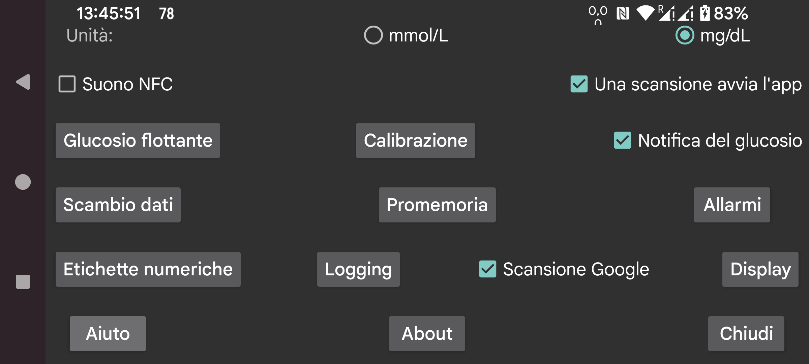

ar be de es fr hi it ja ko nl pl pt ru tr uk uz zh en
Seleziona se i valori del glucosio debbano essere forniti in mmol/L o mg/dL.
Emetti un suono durante la scansione oltre alla vibrazione.
Se selezionato questa app verrà avviata quando scansioni un sensore tramite NFC anche se questa app non è visualizzata. Se più app hanno questa impostazione, Android mostra un selettore che chiede quale app usare. In pratica, né scegliere un'app una volta né impostarne una come default funzionano. Quindi in questo caso non puoi scansionare senza un'app in primo piano. Disattivarlo in questa app, renderà possibile che almeno un'app possa essere attivata in questo modo.
Se hai accesso root, puoi anche disabilitare l'attivazione NFC dell'app Librelink di Abbott (non funziona con Libre3):
Diventa root in adb shell o termux, e digita:
pm disable com.freestylelibre.app.nl/com.librelink.app.ui.common.NFCScanActivity
Su Librelink 2.7.1 e inferiori dovevi premere:
pm disable com.freestylelibre.app.nl/com.librelink.app.ui.common.ScanSensorActivity
com.freestylelibre.app.nl è qui la versione olandese di Librelink, questo dovrebbe essere sostituito con la versione che stai usando. Puoi trovare il suo nome digitando (anche senza root):
pm list package freestylelibre
In seguito, puoi ancora usare Librelink per la scansione quando è in primo piano, ma non verrà avviato altrimenti. Librelink 2.5.2 e successivi vanno in crash da soli se rilevano root. Ma in Magisk puoi facilmente nascondere root rinominando Magisk e aggiungendo singole app alla denylist (Magisk 24.3) o Magiskhide (Magisk 23.0). Dovresti anche aggiungere Juggluco alla denylist. Tranne quando usi sensori Freestyle Libre 2 statunitensi, puoi anche usare una versione più vecchia di Librelink senza il controllo root.
Senza root, sotto adb shell, puoi anche disabilitare l'intera app:
pm disable-user --user 0 com.freestylelibre.app.nl
Prima di chiamare il servizio clienti Abbott, puoi riabilitarlo con:
pm enable com.freestylelibre.app.nl
(In precedenza chiamata "Glucosio nella barra di stato android"). Se impostato, i valori del glucosio in flusso tramite Bluetooth vengono mostrati silenziosamente in una notifica e nella barra di stato di android. Se lo disattivi, invece di un numero viene mostrato un punto e la notifica non dice nulla più di "Per connettersi al sensore" o "Per scambiare dati". Un'app che rimane in esecuzione in background, è obbligata da Android ad avere tale notifica visibile (altrimenti è facilmente fermata da Android). Juggluco disattiva la notifica solo quando "Sensore via Bluetooth" è disattivato e non ci sono connessioni mirror.
Su alcuni smartphone, il valore del glucosio viene mostrato nella barra di stato Android solo dopo aver modificato le impostazioni delle notifiche di Android. Su Realme GT 5G ad esempio, devi andare in lista app->Juggluco->gestisci notifiche, scheda glucoseNotification e disattivare "Imposta su silenzioso". "Mostra nella barra di stato" verrà ora mostrato attivato.
Puoi anche ottenere una notifica android selezionando Notifica nel menu centrale sinistro. In tal caso la notifica sarà inviata ad alcuni smartwatch, se è configurata in tal modo. Funziona con gli orologi Garmin, non so se funziona con qualcos'altro. Anche gli allarmi generano notifiche.
Quando attivi questo, una piccola immagine con il valore corrente del glucosio è costantemente presente sullo schermo indipendentemente da quale app è in primo piano. Se lo attivi la prima volta, sarai indirizzato a una lista di app in cui devi concedere a Juggluco il permesso di visualizzare su altre app.
Imposta gli allarmi di glucosio alto e basso, l'allarme di perdita di segnale e la notifica di valore disponibile.
Specifica le etichette usate per i valori. Apre una schermata in cui scegli quali etichette usare, per cose come dosi di insulina, carboidrati consumati e ore passate a giocare a calcio. Se usi anche l'app per orologio Garmin Kerfstok, queste etichette sono inviate all'app per orologio.
Diversi modi di inviare dati da Juggluco ad altre app o server. (Per inviare dati agli orologi vai in menu sinistro->Orologio.)
Specifica che un allarme dovrebbe scattare se non inserisci una certa quantità di cibo o farmaci entro una determinata finestra temporale.
Scansiona la data matrix sulle confezioni dei sensori Sibionics e sugli applicatori Dexcom G7/ONE+ e il codice QR di menu centrale sinistro→Mirror con lo scanner di codici Google. Se non selezionato, viene usato zXing. Sulla maggior parte dei dispositivi, Scansione Google funziona meglio, ma a volte non funziona. Quando fallisce con un errore, viene sempre usato zXing, ma a volte Scansione Google semplicemente non funziona senza restituire un errore.
Ogni sorta di impostazioni relative a come vengono visualizzati i dati, dal range target alla lingua.